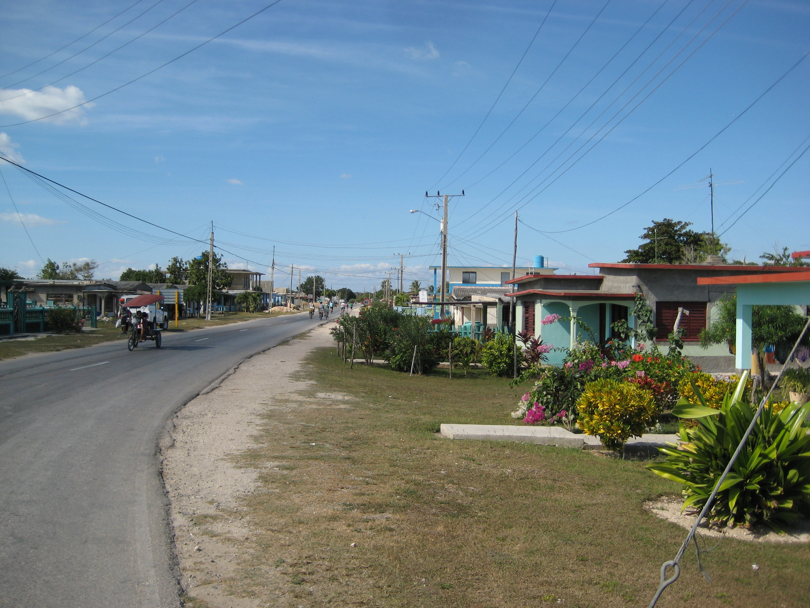
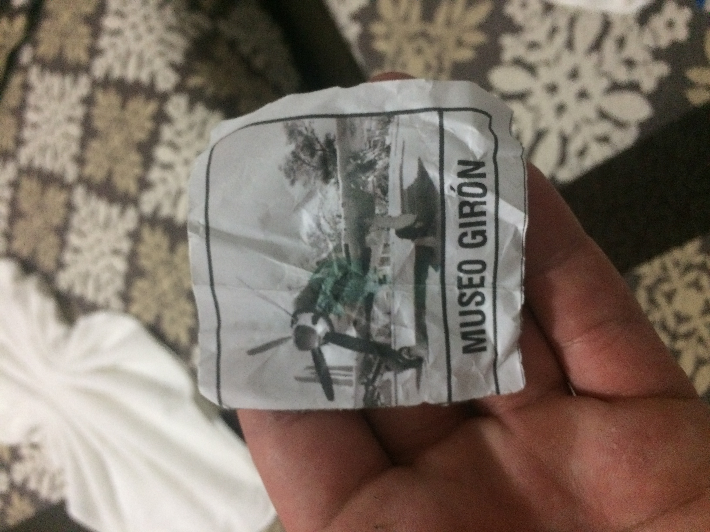
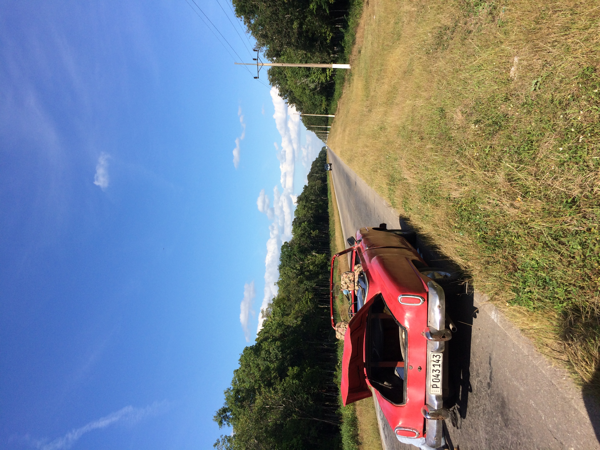

Our Trip
In December, 2016 my two brothers, sister-in-law and I took an extended trip through Cuba. My younger brother wanted to visit Cuba for a very long time, and when President Obama loosened travel restrictions for US citizens we jumped at the chance to go. I was in Cuba for almost three weeks and got to see much of the central and eastern regions of the country. This page is a short overview of my time in the central region which has lots of swamps and lagoons, has for a long time been the major source of charcoal for the island, and is the location of the infamous CIA backed Bay of Pigs Invasion of 1961.
Visiting Playa Girón

Playa Girón is an extremely popular summer vacation spot for Cubans.

My ticket to the Museo de la Intervención
 The beach at Playa Girón.
The beach at Playa Girón.
My brother and I hired a taxi driver to take us from Cienfuegos (which was a very cool industrial and port city, and the first city we visited after landing in Havana) to Playa Girón. That trip took most of a day (Cubans have to always be wary of being stopped by the police or military and so very few drivers speed). We traveled through some beautiful mountainous jungle areas and then came down to the beach in Playa Girón. Our driver played a long mix of classic American Rock and current R&B songs. We learned that across Cuba there is a ‘network’ that passes USB drives filled with music, movies, and TV shows around the island since almost no one has access to the internet except for a tightly controlled internal network.
At Playa Girón we went to the beach and swam for a bit, then relaxed. My brother and I knew the history of the Bay of Pigs invasion, but we didn’t know what Cubans were taught about it or if they even cared about the attempted invasion. Turns out the government makes sure all school children learn about the Bay of Pigs and while the Cuban government is very proud of its forces defeating American backed invaders, the average Cuban doesn’t really care. At the beach I went to buy some beers (I had to trade US Dollars $ to Euros € in the us and then in Cuba, convert again to 'Convertible Pesos'.) from a little shop and when the clerk heard my terrible Spanish he asked if I was American. I replied, “Yes.” and he laughed and said, “You’ll love this place. Americans have already been here.”
After our day at the beach we decided to go to a local military museum. It was pretty cool to see the other side of the story of the Bay of Pigs invasion, a side I barely got in the USA. I tried to do a crash course of studying Spanish in the month before we made the trip, but I didn’t pick up much. At the museum I realized that I could read most of the signs and informational panels, or at least get a very reasonable idea of the information being presented. I studied French for four years and between the similarity of the roots of many French and Spanish words, the context of the military museum, and text meant to be understood by school kids I was able to figure out much of each display.
A Day Trip With a Guy Who is Not Having a Good Day

The car that hit a bird then burst a tire. Poor guy, we gave him a big tip.
After the museum we asked a couple of local people what we should do next, and since it was early in the day they suggested a trip to an educational park that contained a recreation of a native village of the Taíno people, and a small zoo. The staff at the apartment where we were staying called a car for us (Lots of Cubans make extra money by driving illegal cabs and they can get you anywhere.) When we got in the cab my brother asked the driver how his day was, and I didn’t understand his response but the look on my brother’s face told me something was wrong. I asked him what the driver said and my brother answered, “We’ve been in Cuba for a week and every time I’ve asked someone how they’re doing everyone has said, “Pretty good.” This guy just told us he’s not having a very good day.”
The drive to the park took about an hour twisted through beaches, swamps and grasslands. We got to see some small cabins that Cubans use for summer vacations near the beach, and lots of beautiful scenery. A little bit into the trip we saw some intimidating signs along the road, and while I couldn’t read them my brother and the driver talked about them. We had just entered a conservation area and the signs were warning of very strict punishments for dumping trash, harvesting lumber, or harming wildlife. Not even five minutes later the driver, my brother, and I watched a giant white bird fly into the front of the car, bounce off the roof and fall dead in the road behind us. Damn. This poor guy was not having a good day at all, and as if the universe wanted to prove to us beyond a shadow of a doubt that the driver’s day was going badly, one of his tires blew out a few minutes later. He had to pull over in a very sun scorched grassy area with no shade at all while he changed his tire. We tried to help, but he refused assistance and instead asked us to watch the road so no cars collided with his car.
Meeting Some Tourists From The UK
When we reached the educational park the driver had barely stopped the car when we were confronted by a very excited and slightly angry woman with a strong British accent. Turns out that she was a professional interpreter from the UK and her only two clients wanted to visit the Taíno village. The recreated village is on an island in the middle of a very large lake, and the park staff were refusing to take just three people across the lake. These three people from the UK had been waiting for hours for other tourists to show up so there would be enough people to justify the boat trip. The interpreter kept hounding us to buy tickets to the island so that the staff would take us and her clients. We wanted to buy some lunch first, but when she actually began pleading with us we relented and bought tickets for the trip to the island. Looking back on it we should have held out until she bought us a sandwich or a beer or something.
The Taíno village was an interesting place to visit. Since long before Europeans arrived in Cuba the Taíno had been making charcoal by gathering logs and slowly burning them. Even after the Communist revolution, charcoal is a major source of energy for many Cubans to cook with. The central area of the island where this village is located where most of the charcoal is produced. As we toured the village we learned about charcoal making, how the Taíno fished and hunted, and the many forms of wildlife in the area. The staff were generally nice, just as apathetic and bored as any teenagers working at a tourist destination would be. I have worked at a theme park and recognized the same looks on the faces of the Cuban staff that I saw on my own coworkers.
I Gave Away My Hat
Near the end of the island tour one of the staff members saw my St. Louis Cardinals hat and asked me if he could have it. I said sure and we got a cool picture of him in my hat and me wearing a Taíno headband. I hoped that I could keep the headband, but from what I understood him to say it belonged to the park and he couldn’t give it away. After walking through the village the five of us got back onto the boat for the ten minute boat ride back to the main park. The entire trip back one of the tourists from the UK complained non-stop that she didn’t see any flamingos. Her interpreter and husband just sat quietly and let her vent. I think the boat pilot realized that my brother and I were not with that woman, and he told my brother in Spanish that there were no flamingos in this area, and that the staff had told the woman before the trip that there were no flamingos and she shouldn’t expect to see any. The interpreter heard him and made an annoyed face but her clients didn’t understand the pilot. When we got back to the main park we found our driver in the almost empty parking lot. He had taken a long nap and was in a much better mood. He had a friend who would patch his tire and the poor bird we hit hadn’t done any damage to his vehicle. We got in his car and headed back to Playa Girón.